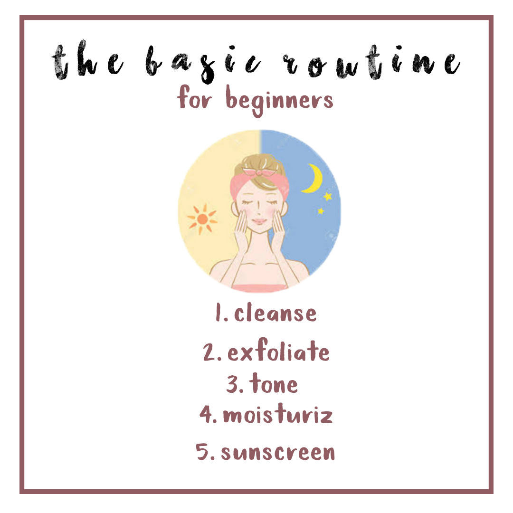
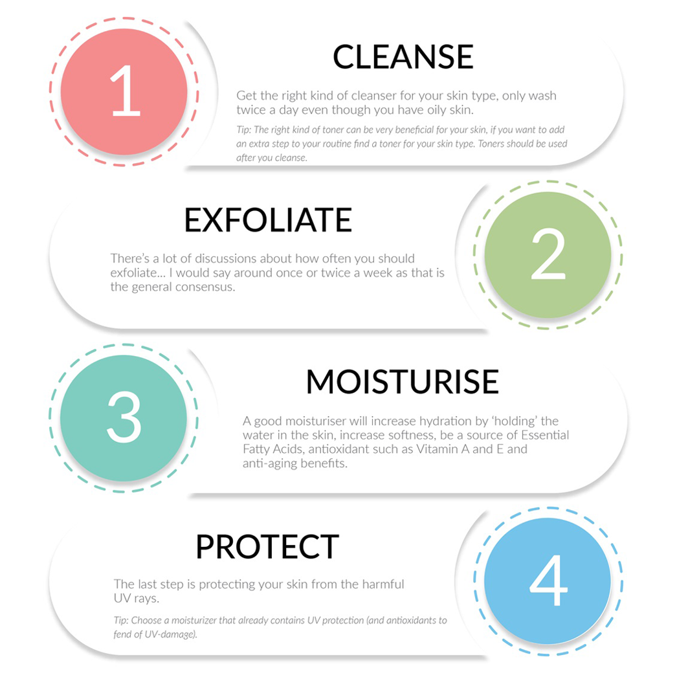

SKINCARE BEGINNER | THE BASIC ROUTINE

First of all, you need to know your skin type.How to know your skin type? => Know your skin type here.
1.Cleanse
Even if a few, short minutes is all you’ve got, freshly cleansed skin twice a day is a good place to start your routine (both morning and evening). A great cleanser will rid your skin of dirt and impurities (and make-up too!) without leaving your skin feeling taut and dry. It’ll prep your skin for your next skincare steps, meaning products like your moisturiser will work better.
2.Exfoliate
Exfoliation is the process of sloughing away dead skin cells from the surface of your skin. This dead skin cell buildup can make your complexion look dull. As far as how often you should exfoliate, it depends. Some people can handle daily exfoliation, while others can only do so once or twice a week. Pay attention to how your skin responds to determine what works best for you.
3.Tone
To tone or not to tone? It’s a personal preference but we like to sweep a soaked cotton pad across skin to help remove excess oils and dead skin cells (and to keep our skin feeling happy!). It’s great to help pep up and refresh skin especially if yours includes ingredients like Witch Hazel (to help tighten pores) and calming Chamomile. Running short on time? Save this step for the evening to remove any last traces of make-up at the end of the day.
4.Moisturize
A moisturiser - you guessed it - will help protect your skin from losing moisture (keeping it feeling supple and plump!). A not-so-great moisturiser? Will likely leave skin still feeling tight and dry, and breakouts can happen as your skin tries to adjust. Look out for ingredients like Vitamin E, Glycerin, Pro-Vitamin B5, and Borage Seed Oil, which are all great moisturisers for your skin. We like to warm up our moisturiser between palms before applying – it smooths on a treat!
5.Sunscreen
The last step in your morning skin care routine should be applying a broad-spectrum sunscreen.You should use an SPF of 30 or higher daily. If you have oily skin, look for an oil-free, non-comedogenic formula; if you have dry skin, look for one that’s moisturizing. But that’s not all—there are other sun protection measures you should take in addition to wearing broad-spectrum sunscreen. You also should also reapply every two hours (or immediately after swimming or sweating), limit your amount of time in the sun (especially during the peak hours of 10 a.m. to 2 p.m.), seek shade, and cover up exposed areas in long sleeves, pants, a broad-brimmed hat, and UV-blocking sunglasses.
|  |